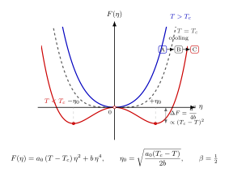

二阶相变与对称破缺 — Landau 平均场究竟做了什么?
上一节我们看 $\mathrm{CO}_2$ 的液-气相变, van der Waals 等温线在 $T\lt T_c$ 下有一段奇怪的"负斜率", 我们用 Maxwell 等面积法把它抹平, 得到两个共存相. 密度在这条平台上是跳跃的 — 液相一个密度, 气相另一个密度, 之间没有连续过渡. 这叫一阶相变.
但自然界中有一类相变不是这样. 一块铁在高温下没有自发磁化, 是顺磁体; 把它冷却到 Curie 温度 $T_c \approx 1043\,\mathrm{K}$ 以下, 它开始自发磁化, 出现一个净磁矩 $M$. 关键是: 当 $T$ 从 $T_c$ 上方缓慢降到 $T_c$ 下方, $M$ 不是从 0 突然跳到一个有限值 — 它是连续地从 0 长出来的, 先是很小, 然后按某个幂律缓慢增长. 但是 $M(T)$ 的导数 $\partial M/\partial T$ 在 $T_c$ 处不连续, 比热 $C_V$ 也在 $T_c$ 处出现奇异. 这就是二阶相变的指纹: 序参量本身连续, 但它的导数和某些热力学响应函数在 $T_c$ 处发散或跳跃.
问题是: 这种连续的、幂律的行为, 是从哪里来的? 它跟具体材料有多大关系? 1937 年 Landau 给出了一个极漂亮的答案 — 几乎跟具体哈密顿量无关, 只靠对称性和解析性, 就能得到一整套临界指数. 本节把这个推理从头捋一遍.
一、序参量: 识别"什么东西在突变"
要描述相变, 先要找对"主角". Landau 的第一步是引入序参量 (order parameter) $\eta$: 一个在无序相 ($T\gt T_c$) 取零、在有序相 ($T\lt T_c$) 取非零的量. 它的选择不是任意的, 得看系统破了什么对称性.
- 铁磁体: 高温时所有自旋方向随机, 净磁化 $M=0$; 低温时自旋趋于平行, $M\neq 0$. $\eta = M$ 是标量 (或矢量, Heisenberg 模型下).
- 液-气临界点: $\eta = \rho_\text{液}-\rho_\text{气}$, 到 $T_c$ 时两相密度相同, $\eta\to 0$.
- 超导: $\eta = \psi$, 复值宏观波函数, 破 $U(1)$ 相位对称.
- 二元合金有序-无序转变 (如 $\beta$-黄铜): $\eta$ 是两种原子占据各自子晶格的概率差.
一般原则: 高温相有某个对称群 $G$, 低温相只剩 $G$ 的子群 $H\subset G$; $\eta$ 就是 $G/H$ 陪集上的坐标. 对铁磁: $G=\mathbb{Z}_2$ (自旋翻转), $H=\{1\}$, 所以 $\eta$ 落在 $\mathbb{Z}_2$ 上, 可正可负. 这一对称性结构是下面所有论证的骨架.
第二步是把"$T_c$ 附近 $\eta$ 小"当作前提. 这听起来像废话, 但它是整个 Landau 展开成立的唯一硬性假设 — 没有这条, 泰勒展开没意义.
二、Landau 展开严格来一遍: 为什么偏偏是 $\eta^2 + \eta^4$?
这里就是本节要 严格 deepdive 的核心 cliché: "自由能是 $\eta$ 的 Taylor 展开", 教科书一写就过, 我们得问清楚每一步凭什么.
前提 1: $F(\eta, T)$ 在 $\eta=0$ 附近解析. 这不是平白假设, 而是 Landau 的物理猜想: 有限体积下配分函数 $Z$ 是有限维积分, 自由能 $-k_B T\log Z$ 是参数的解析函数; 即便在热力学极限下, 离开临界点远处 $F$ 应当仍然光滑. 奇异性只集中在 $T=T_c$ 这一点本身. 因此对任意 $T$, 只要 $\eta$ 足够小, 展开
\begin{equation} F(\eta, T) \;=\; F_0(T) + A_1(T)\eta + A_2(T)\eta^2 + A_3(T)\eta^3 + A_4(T)\eta^4 + \cdots \label{eq:expand} \end{equation}原则上合法. 问题变成: 这些系数哪些为零、哪些不为零、以及它们怎么依赖 $T$.
(a) 为什么只展到 $\eta^4$? 物理上, 在 $T_c$ 附近 $\eta$ 本身是小量 (马上会看到 $\eta\sim\sqrt{T_c-T}$). 对应地, $\eta^6$ 相对 $\eta^4$ 要小一个 $\eta^2$ 因子, 即小一个 $(T_c-T)$ 因子, 在临界奇异性中可以忽略. 真正要留到 $\eta^4$ 而不是 $\eta^2$ 的理由是稳定性 — 下面第 (c) 步会看到, 如果没有 $\eta^4$, 当 $A_2\lt 0$ 时自由能会发散到 $-\infty$, 系统就没有定义良好的基态.
数学上讲: 以四阶截断为准, 误差是 $O(\eta^6)$; 由于 $\eta^2\sim (T_c-T)$, 误差相对主项是 $O(T_c-T)$, 在 $T\to T_c$ 时可控地消失. 这就是 Landau 展开的自洽域.
(b) 为什么没有奇数项 $\eta$、$\eta^3$? 对称性禁止. 以铁磁为例, 系统在零外场下对自旋翻转 $\eta\to -\eta$ 不变, 即 $F(\eta)=F(-\eta)$. 这直接抹掉所有奇次项:
$$ A_1 = A_3 = A_5 = \cdots = 0. $$如果有外场 $h$ 耦合到序参量 (磁场对磁化), 则出现一个 $-h\eta$ 项, 它是对称破缺的外部扰动, 不由对称性自动给出. 关键是: 对称性本身不需要做假设, 只要指定高温相的对称群, 一次项就被干掉了. 这就是 Landau 推理的优雅之处 — 形式几乎由对称性唯一决定.
更一般地, 若序参量在群 $G$ 下不变的组合只有 $\eta^2,\eta^4,\ldots$, 展开就只能取偶次. 对复序参量 $\psi$ (如超导), 不变量是 $|\psi|^2, |\psi|^4, \ldots$, 形式相同.
(c) 系数 $A_2(T)$ 必须变号. 现在 $F=F_0+A_2\eta^2+A_4\eta^4$ (我们改记 $A_2\to a, A_4\to b$). 令 $\partial F/\partial\eta=0$:
$$ 2a\eta + 4b\eta^3 = 0 \;\;\Longrightarrow\;\; \eta\,(a+2b\eta^2)=0. $$解有两种情形:
- 若 $a\gt 0, b\gt 0$: 只有 $\eta=0$ 是极小值, 对应无序相.
- 若 $a\lt 0, b\gt 0$: $\eta=0$ 变成极大值, 出现两个新的极小值 $\eta=\pm\sqrt{-a/(2b)}\ne 0$, 对应有序相.
注意 $b\gt 0$ 是必需的 — 否则 $\eta\to\infty$ 时 $F\to-\infty$, 系统没有稳定态. 这解释了为什么必须保留 $\eta^4$, 不能只用 $\eta^2$.
为让相变恰好发生在 $T=T_c$, 最简单的选法是 $a(T)$ 在 $T_c$ 处过零并且可解析地变号:
\begin{equation} a(T) = a_0\,(T-T_c), \qquad b>0, \qquad a_0>0 \label{eq:aT} \end{equation}这是能得到连续相变的最简参数化. 任何更复杂的依赖 $a(T)$ 只要在 $T_c$ 附近有同样的单调过零, 都给出同样的临界指数 — 这已经是普适性的先兆.

三、算临界指数 $\beta=1/2$: 平均场的核心预言
把 $a(T)=a_0(T-T_c)$ 代回极小条件, 当 $T\lt T_c$:
$$ \eta_0(T) = \sqrt{-\frac{a}{2b}} = \sqrt{\frac{a_0(T_c-T)}{2b}}. $$这立即给出一个非常干净的幂律:
$$ \eta_0(T) \;\propto\; (T_c-T)^{1/2}, \qquad T\to T_c^{-}. $$即指数 $\beta=1/2$. 这是推导关键: 一旦承认 $a(T)$ 在 $T_c$ 处线性过零, 加上 $\eta^4$ 项给出稳定谷底, $\eta_0\sim\sqrt{T_c-T}$ 是数学上必然的.
类似地, 往 $F$ 里加一个外场项 $-h\eta$:
$$ F = a\eta^2 + b\eta^4 - h\eta $$极小条件 $2a\eta+4b\eta^3 = h$. 正好在 $T=T_c$ (即 $a=0$) 时, $h=4b\eta^3$, 所以 $\eta\propto h^{1/3}$, 即 $\delta = 3$.
再算磁化率 $\chi=\partial\eta/\partial h|_{h=0}$. 对上式微分: $2a+12b\eta^2=1/\chi$. 在 $T\gt T_c$, $\eta_0=0$, 得 $\chi = 1/(2a_0(T-T_c))\propto (T-T_c)^{-1}$, 即 $\gamma=1$. 在 $T\lt T_c$, $\eta_0^2=-a/(2b)$, 代回得 $\chi = 1/(-4a) = 1/(4a_0(T_c-T))$, 同样 $\gamma=1$ (振幅差一个因子).
比热: 代 $\eta_0$ 回 $F$ 得 $T\lt T_c$ 时 $F_\min = F_0 - a^2/(4b) = F_0 - a_0^2(T_c-T)^2/(4b)$. 对 $T$ 两次微分, 得到 $C$ 在 $T\lt T_c$ 比在 $T\gt T_c$ 多一项 $a_0^2 T/(2b)$ 的有限跳跃 — 即 $\alpha=0$ (跳跃而非发散).
四个主要指数:
$$ \boxed{\;\beta=\tfrac12,\quad \gamma=1,\quad \delta=3,\quad \alpha=0\text{ (jump)}\;} $$这四个数字只用了两个输入 — 对称性禁止奇数项、$a(T)$ 在 $T_c$ 处线性变号 — 跟具体什么材料、什么哈密顿量无关. 这是第一次"普适性"的苗头.
四、数字代入、失守的维度、与 Landau 的时代
平均场值 $\beta=0.5$ 听起来精确, 可以跟实验对比.
铁磁铁 (Fe, bcc). Curie 温度 $T_c\approx 1043\,\mathrm{K}$. 精密测量给出 $\beta_\text{Fe} \approx 0.36$ — 显著小于 0.5. 相对误差 $(0.5-0.36)/0.36\approx 39\%$, 这不是实验噪声, 而是 MFT 在 3 维上系统性偏离真值. 镍 ($T_c\approx 627\,\mathrm{K}$) 给 $\beta\approx 0.38$, 气液临界点给 $\beta\approx 0.326$, 这些都与 MFT 0.5 有约三分之一到四分之一的差距, 但彼此之间只差百分之几.
三维 Ising 模型的数值结果 $\beta\approx 0.3265$ 跟液-气精度一致, 跟铁磁近似一致. 这又是普适性 — 但 Landau 的 0.5 错了约 35%.
Landau 在哪里失手? 隐藏假设是: 系统整体被单一 $\eta$ 值描述, 忽略 $\eta$ 在空间中的涨落. 真实系统中, 在 $T_c$ 附近关联长度 $\xi\to\infty$, 局部 $\eta(\vec{r})$ 有巨大的长波涨落 — 正是这些涨落让自由能偏离解析展开的平滑形状.
Ginzburg 判据. 涨落是否重要, 取决于维度. 简单估算: 在关联体积 $\xi^d$ 内, 涨落的能量 $\delta F_\text{fluct}\sim k_B T$; 经典平均场给的能量是 $|F_\min|\xi^d \sim (a^2/b)\xi^d$. 比较两者, 利用 MFT 下 $\xi\sim (T_c-T)^{-1/2}$, 可以推出涨落 不 支配的判据是 $d \gt 4$. 即
$$ d_c = 4 $$是 "上临界维": 在 $d\ge 4$ 上 Landau MFT 渐近严格, 指数就是 0.5 等; 在 $d\lt 4$ 下涨落主导, 真实指数要靠重整化群才能算对. 我们生活在 $d=3$, 恰在 $d_c=4$ 的下方, 所以 MFT 给出的指数系统性偏离实验值, 但误差也不是太大 — 这正是 $\epsilon=4-d=1$ 的展开在微扰论中给出结果的原因 (下一节会讲普适类和重整化群时展开这点).
极限检验: $d\to\infty$. 在无限维格子上, 每个格点的配位数也趋无穷, 平均场近似里"邻居平均场"跟实际邻居分布完全重合, MFT 严格. 所以高维极限是 MFT 严格成立的理论保证 — 不是数学凑巧. 这也解释了为什么平均场对几乎所有化学、材料领域的定性问题都 "七八成对": 现实问题绝少严格处在 $T_c$, 离开临界点越远, 涨落越小, MFT 越准.
历史线. Landau 1937 在 Zh. Eksp. Teor. Fiz. 发表两篇短文, 把二阶相变的理论一锤定音: 不需要具体模型, 只靠对称性和展开; 同一框架可以描述磁性、铁电、二元合金、超流. 1950 年他和 Ginzburg 把展开推广到空间非均匀情形, 加入梯度项 $|\nabla\eta|^2$, 得到 Ginzburg-Landau 方程, 后来成了超导 (1957 BCS 之前就定性解释了 Meissner 效应) 和超流的标准工具. 1959 年 Gor'kov 证明 GL 方程可以从 BCS 微观理论在 $T$ 近 $T_c$ 处严格导出. 1960 年代 Ginzburg 自己提出判据指出何时 MFT 失效; 1971 年 Wilson 的重整化群才最终解决了 $d\lt d_c$ 的临界指数问题, 并于 1982 年得诺奖. Landau 的这套展开, 横跨整个 20 世纪凝聚态物理.
小结
Landau 平均场理论的核心论证是: 对称性 + 解析展开 + 一个系数在 $T_c$ 变号, 三样东西就能把二阶相变的临界指数全套算出来. 它是第一次让"普适性"从形式主义中自己浮出水面 — 具体材料完全被抹掉, 只剩对称群和空间维度. 它也清晰地暴露了自己的失败边界: 空间涨落在 $d\lt 4$ 时主导, 真实铁磁的 $\beta$ 是 0.36 而不是 0.5. 这个失败是有意义的 — 它直接指向下一步: 如果把涨落系统地加进来, 会得到什么? 这正是普适类、标度律、重整化群的起点. Landau 不是最后一个字, 但它说清了第一句话.
▲